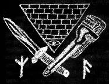

SHADOWLIVING
TACTICAL
MANUAL
DANIEL SANTIAGO
Black Operations
Publications
Minneapolis, MN
© Copyright 2008 by Daniel Santiago
Cover artwork © by Daniel Santiago
All Rights Reserved
No portion of this book may be reproduced without the express written permission of the author or the publisher.
Published by Lulu Press
Additional copies may be purchased online athttp://www.lulu.com/content/2695362
The author can be contacted atbrimstone999@gmx.com
ISBN-10: 1-43573-450-5
ISBN-13: 978-1-43573-450-0
Library of Congress Control Number: 2008911260
Printed in the United States of America
DISCLAIMER AND WARNING
Neither the author nor the publisher assumes any
responsibility for the use or misuse of any information contained herein. All information is presented for educational or entertainment purposes only. Anyone questioning the safety or legality of any activity herein should contact a second professional opinion.
CONTENTS
Introduction
Wilderness Survival 6
Shelter 7
First Aid
Fire
Water
Signaling
Food
Self-Defense
Situational Awareness
Tactical Mindset
Conflict Defusing
Hand to Hand Combat
Edged Weapons
Firearms
Improvised Weapons
Home Security
Use of Booby-traps
Use of Flash and Smoke Bombs
Privacy
The Art of Invisibility
Your Alternate Name and Address
Mail, Trash, and Utilities
Your Social Security Number
Using Telephones
Using Computers
Privacy In Traveling
Use of Liaisons
Use of Banks
Use of Business Fronts
Using Hiding Places
Dealing With The Police 81
Use of Disguises
Defeating Drug Testing
Frugal
Living
Living Debt Free
Shelter
Food
Clothing
Utilities 110
Health Care 114
Transportation 116
Entertainment 118
Dumpster Diving 121
Pets 124
INTRODUCTION
Shadowliving is the utilizing tactically of any knowledge to reduce dependence upon, to evade, to resist, to defend against, or to sabotage the encroaching oppression of a system of powerful military and industrial corporations working in concert with the state to abuse its citizens and bully the rest of the world.
Shadowliving’s main strength lies in its defense by invisibility. Anyone can practice shadowliving and most of its practitioners are not outspoken activists but aloof, detached observers that refuse to comply and assimilate.
The information presented here is based on the personal research and real life experiences of myself and others. Many tactics presented here can be applied, altered, and improved upon given the situation and ingenuity of the reader. Likewise, many tactics presented here are legal, some quasi-legal, and some downright very illegal therefore I leave application of them up to the discretion of the reader.
WILDERNESS SURVIVAL
This chapter was written with the ideas of discussing survival for a short term in the wilderness in North America till one could get help and is rescued. It is not meant as a guide for long term survival and “living off the land.” So you will find no obscure mountain men techniques such as making fires with bows and drills, making and tanning hides, or making cordage with plant fibers here.
Likewise, I’ve omitted survival skills used in extreme climates like the arctic, the jungle, the desert, or at sea. They go beyond the scope of this chapter; however, they are excellent books written on those subjects if you wish to do further study which I will mention at the end of this chapter.
The most important thing in a survival situation is your attitude, which must be the will to live. The seven deadly enemies of survival are boredom and loneliness, pain, thirst, fatigue, climatic extremes, hunger, and fear. If you are in this situation don’t panic, this will only confuse you further. Sit down, relax, and allow yourself to think, then observe your environment and plan on what you must procure in this order- shelter, first aid, fire, water, food, and finally signals.
Unless you are a survival expert it would be foolhardy to venture into any sort of wilderness without some sort of survival kit for emergencies. There are many commercial survival kits on the market but you may find it cheaper and even more effective to simply make your own. It should at minimum contain a means of making emergency shelter, making fire, extra food or a way of getting food, carrying and purifying water, navigation aids, safety tools, and signaling aids. This can all be assembled in a variety of containers including soap dishes, metal Band-Aid cans, metal candy or medicine boxes, shoe polish cans, 35mm film cans, and dental floss containers. A typical survival kit could contain the followingTarp or plastic sheeting, poncho, cord, and multi-tool or Swiss army knife with a wood saw (for shelter)
Two lighters, homemade tinder, waterproof matches (water proof by dipping them in paraffin, shellac, or nail polish), and a candle (for fire making)
A full canteen with a cup and iodine tablets (for carrying and purifying water)
Energy food bars, fishing hooks, fishing line, sinkers, and copper snare wire (for getting food)
Map and compass (for navigation)
A first aid kit, a flashlight with duct tape wrapped around the barrel, a signal mirror, and a whistle (for safety and signaling)
Shelter
Shelter is vital for protection from the wind and rain in a temperate climate, in the cold it will need to be enclosed and insulated, and in a warm climate it will need protection from the sun. Staying dry should be a priority, if it’s wet and windy you risk getting exposure from the chilling of your body temperature.
Exposure is a serious condition and can be even fatal.
The shelter should be near a good signaling site, available water and firewood, and building materials if needed. Certain sites should be avoided- streambeds that can fill up in a flashflood; game trails unless you wish to be awaken by a bear or moose, and marshes where the insects will make nights VERY miserable! Likewise, natural hazards such as dead standing trees, areas of possible rockslides or avalanches, ant nests, and bat caves should be avoided.
If you’re lucky you may find a natural shelter like natural rock foundations, rock overhangs, or the undersides of fallen trees.
Caves and hollow logs can be used but should be checked first for safety. Check for animals or signs of them like tracks or discarded food. They don’t take kindly to people squatting their homes. If you’re not too far from civilization you maybe could find a picnic area, freeway bridge, old boxcar, storm drain, a mattress, or old tires.
If you can’t find one you’ll have to construct one from a framework made from poles, sticks, branches, rocks, or suspension line and then covered with materials like a sheet of plastic or plastic bag, old shower curtain, Tyvek house wrap, cloth or sheets, wooded boxes, plywood, galvanized metal sheets, boughs and broad leaves, grass or sod, snow or sand, or rocks. Some types include a lean to,
A-frame, a snow trench, and a snow cave. The A-frame can be made from one pole and one log or one tree and some line covered with a tarp, a poncho, or vegetation. The lean to can be made with a long branch, two Y-shaped branches hammered into the ground to support the long branch, and covering material. An alternate type can be made by tying a line taut between two trees, dropping tarp over the line, and anchoring the tarp to the ground with line and stakes or rocks. Snow trenches are made by digging a hole big enough for your body and covering the top with tarp or branches.
Snow caves are dug in a snow drift with the entrance lower than the cave itself, and then the entrance is blocked with tarp or a pack.
After building your shelter you should insulate the shelter with material, such as leaves or springy branches on the floor to prevent heat loss from the ground.
First Aid
In a best scenario situation you will be healthy and be in good physical condition and if so you should do your best to remain so.
Being a survivor is bad enough without being a sick or injured one.
However, you may get injured or worst be already so. Which is why every survival kit MUST have some sort of first aid kit to deal with medical emergencies, until professional medical help can be reached. At least it should have bandaids, gauze pads, roller gauze, antiseptic towelettes, alcohol pads, antibiotic ointment, and some painkillers like Tylenol or ibuprofen. In addition, you should read about and/ or take classes on basic first aid and CPR. These can be taught by the Red Cross, community colleges, and EMT programs.
It is crucial to know how to restore the airway, breathing, and circulation; as well treat major bleeding and prevent shock. All of these untreated can cause death in minutes! Treating burns, fractures and sprains, and heat/ cold emergencies should be known as well. Some excellent books on first aid include The Wilderness
First Aid Guide by W. Merry and Mountaineer First Aid by Jan
Caroline. If you’re interested in serious first aid read Where There
Is No Doctor by Werner and Emergency Care in the Streets by
Caroline. The former was written for refugee medics and the latter for paramedic training.
Fire
You must have a fire for warmth, cooking, and light at night.
A fire also helps to keep wild animals away. The main three ingredients for any fire are tinder, kindling, and fuel. These ingredients should be gathered and added slowly to the fire once it’s ignited. The location of the fire should be level, have good air circulation, and be clear of combustibles such as dry leaves and grass. The fire should be built in a pit if possible and definitely be built against logs or rocks to reflect its heat and conserve fuel. Do not build it large- small fires burn better. remember the old sayingIndian builds small fire, whiteman builds big fire. If you have to build the fire on damp ground or the snow, place a flat stone or parallel logs where it will be built first.
Dry grass, dry moss, dried citrus fruit peels, dead leaves, wood shavings, dry birch and cedar bark, fir cones, dry pine needles, cattail down, thistle, rodent or bird nest lining, bird down, dried evergreen pitch, and the inside tissue of fungi make excellent material to crush into tinder. The tinder should be the size of a grapefruit and can be ignited by match, butane lighter, or a road flare; by focused sunlight from glasses, magnifying glass, binoculars, or camera; or from the sparks of flint and steel (from a welding striker) or touching the terminals of a battery together (a cell phone battery with steel wool or a car battery with jumper cables are great for this). A clear piece of ice shaped like a magnifying glass and polished with body heat can be used to focus sunlight as well. So can a piece of plastic wrap filled with water and twisted into a sphere making a makeshift lens. There’s also this product on the market made of a magnesium block with a striker.
You scrape off the magnesium, spark the striker, and viola you got fire. Also manmade materials like candles, cotton balls soaked in
Vaseline or kerosene, steel wool, dryer lint, wool fibers, charred cotton cloth, newspaper or sawdust mixed with paraffin wax, wax paper, body hair, flattened milk cartons, alcohol wipes, greasy chips
(think Fritos), chapstick, gunpowder, sawdust soaked in kerosene or lamp oil, plastic utensils, foam rubber, insect repellant, anti-freeze and calcium carbide (used in mining lamps) mixed with water are good alternatives to natural tinder. Kindling such as dry small twigs and leaves can be added once the tinder starts to burn. Then progress to add larger sticks, branches, and finally logs for fuel. Dry animal dung, dry lichen, dry pitch moss, dried seaweed, oil, animal fat, tires, and upholstery can be used as emergency fuels.
Although they are many more they are four basic types of a fire you can build.
a) Tipi- This is your traditional campfire built in a triangular tipi fashion.
b) Log Cabin- This is good for a lot of heat. First allow the tipi fire to burn to a low flame. Then place four dry logs on the edge of the fire. Allow the logs to catch then add four more logs on the first ones. Repeat until the logs catch and the fire burns strong.
c) Bank- This is a good hasty fire for heating and cooking. It is set against a log with kindling and fuel added at an angle.
d) Star- This is a very economical fire. Arrange the logs in star shape and push those inwards as the logs burn.
Water
In order to live all people require a bare minimum of six pints or three liters of water a day to drink. In a survival situation water takes priority over food. A person can survive for weeks without food, but without water a person will die in five days and in a hot climate even much sooner. If you are short of water limit exertion, rest in the shade, don’t overdress, eat only a minimum of food, and whatever you do NEVER drink untreated seawater or urine, blood, alcohol, or smoke tobacco (all of these will increase your thirst).
Water can be obtained generally from surface water in streams, lakes, and springs. Possible water sources are indicated by green vegetation, animal tracks, bee and flies, birds flying in a certain direction at dawn and dusk, frogs at nights, drainage patterns downhill, and human habitation. If you cannot find a reliable water supply it will have to be collected through the rain, dew, vegetation, soil, snow, or condensed seawater or urine. Rain can be collected with a container, raincoat, poncho, or a waterproof sheet stretched taut and pegged down with sticks. Dew can be collected by wrapping a cloth across your legs walking through long, wet grass around dawn to soak the cloth and wring it out in your mouth. If you are near a water source like a river you can dig a hole two to four feet away from it and allow to hole to fill with water, which will be more or less pure. Vegetation can be placed inside a plastic bag, tied shut, and set out in the sun to condense water inside the bag. In dry areas it is possible to build a solar still by digging a hole 3 feet wide and 2 feet deep, put in a container at the bottom, spread a plastic sheet across the hole and hold it in place with rocks, then weigh the center of the sheet with a rock. The water will condense on the sheet and into the container at about a rate of 2 pints a day.
In cold climates do not eat snow directly at this will lower body temperature and increase your thirst. Instead, melt the snow with your body heat by placing it in plastic bag and placing it between your layers of clothing NOT next to your skin. Seawater and urine can be treated by placing either in large container and placing an empty smaller container in the center. Then drape a plastic sheet over the large container, tie the sheet down, and place a stone in the sheet’s center to weigh it down. In hot climates, cacti can be cut off the top and have the juice sucked up or vines can be cut as high as possibly and its sap UNLESS milky drunken for water..
All water unless collected from rain or condensation MUST be filtered and purified since almost all wild water contains microorganisms like leptospirosis, bilharzia, dysentery, hookworms, or giardia which can make you very sick. Water could be filtered though a sock, bandana, nylon stocking, coffee filter, or a bucket with holes filled with gravel, sand, and burnt wood or charcoal.
Then it can be purified by either commercial filter, tincture of iodine
(2%), chlorine bleach, or boiling. Commercial filters such as
Katadyn, Pur, or MSR can be found in camping and military surplus stores. To purify by boiling simply heat the water to a rolling boil for one minute at sea level and an additional minute for every 1,000 feet above sea level. Tincture of iodine uses 5 drops to 1 quart or liter of water then let water stand for 30 minutes and double the dose if water is cloudy or cold. However, iodine shouldn’t be used by children, pregnant women, and those with a thyroid problem.
Chlorine uses 2 drops to 1 quart or liter of water then let water stand for 30 minutes and double the dose if the water is cloudy or cold.
Note that iodine or chlorine may not kill cryptosproridium in water;
furthermore if you have a suppressed immune system boiling should be the ONLY purification method you use. WARNING- Never gather milky sap from plants, collect water from areas with lots of green algae on the surface, dead animals nearby, near roads, in marshes or swamps, or has a potent smell.
Signaling
When trying to send a distress signal- think THREE. Three of anything- 3 whistle blasts, 3 flashes of a strobe light or flashlight,
3 fires seventy five feet apart in a triangle or a straight line at night, or 3 gunshots. Send your signal, wait a minute, and repeat your signal. Also a mirror, aluminum foil, shiny piece of metal or glass, or a compact disc can be aimed at the sun to flash light to passing aircraft or possible rescuers around as this can be see for miles from the air. Send 3 short flashes, 3 long ones, and 3 short ones again
(this spells *** --- --- --- *** also known as 'SOS”). Consider
ANYTHING that will attract attention- striking hollow logs, banging metal on wood; laying logs, rocks, broughs, or brightly colored material to say SOS or HELP or V (an international distress signal); making a smoke signal with green leaves/ ferns or damp foliage, burning oil, rubber, or plastic.
Food
Save your energy unless you are experienced do not waste hours of time on complex snares, traps, and nets. As for hunting unless you have a bow and arrow, a firearm, slingshot, bola, or make a spear and are VERY good at it- forget about it! Proficient hunting takes hours of practice; it is best learned BEFORE you really need to do it. Concentrate on edible plants that can be foraged such as grass, inner bark on evergreens, roots and tubers, seeds and grains, cattail, dandelions, fresh seaweed, crabapple, watercress, docks, nettles, and pine needles as well as easy to find animals like fish, frogs (avoid toads), insects unless brightly colored (ants, grasshoppers, locusts, crickets, cicadas, caterpillars, termites, honeybees, and grubs), worms, lizards, turtles, salamanders, bird eggs, and seafood. Simple snares can be made for birds, squirrels, rabbits, hares, opossum, beaver, rodents, dogs, cats, and snakesforget about big animals.
When foraging for plants you don’t recognize or not listed above use care. Eating the wrong plant can cause sickness or even possible death. The best way is to research edible AND poisonous plant field guides. However- this may not be possible so you may have to apply an edibility test. It’s time consuming and you cannot eat anything else during this test but a good way of verifying an unknown plant’s edibility. Firstly, reject ANY plant with hairs, thorns, milky or colored sap, shiny leaves, white or yellow berries, umbrella shaped flower clusters, five segmented divisions, red berries or fruit, blackened spurs on grain heads, wilted leaves, or smells like bitter almonds. In addition, reject ALL mushrooms, beans, peas, bulbs, and blue-green algae. Rub some of the plant on your skin and wait fifteen minutes. If you get an itching or burning sensation or get a rash, discard the plant IMMEDIATELY. If you don’t, touch some of the plant to your lips and tongue for ten seconds. If the plants burns, stings, numbs, or is bitter discard it. If not, chew and hold it in your mouth for fifteen minutes (do NOT swallow it), spit it out, and wait eight hours. If there are no ill effects such as nausea, stomachache, cramps, vomiting, or diarrhea chew and swallow a spoonful of the plant and wait another eight hours. If you still get no ill effects then eat a cupful and wait another eight hours. If you still feel no ill effects then the plant can be considered safe to eat.
Fishing is probably the most reliable way of gathering food in a survival situation. Almost all freshwater fish are edible and most saltwater fish are edible. Any saltwater fish that is brightly colored or doesn’t look like a fish (looks ugly, has ball or box shape, deepset eyes, parrot beak, prickles, or bony scales) MUST be avoided.
Almost all mollusks (mussels, limpets, clams, sea snails, octopus, squid, oysters, sea slugs), crustaceans (crabs, lobster, crayfish, shrimp), and eels are edible. Avoid ANY cone-shaped shell some have a poisonous lethal sting, all jellyfish, and all sea anemones.
Sea urchins are edible as well but you must be careful about stepping or brushing against them because of their spines. All sea life in polluted water or during a 'red tide’ is best avoided.
The best known way of catching fish is with a hook and line.
It is best time to do this is in the early morning, evening, or before a storm. Although you could get a rod made from a branch then run a line down its length, securing it, then try it at the end, and fish.
Fishing with rigs saves time and can be left unattended so you can do other tasks. The easiest is probably a limb line made by tying the line to a strong but flexible line to go two to three feet deep in the water. Tie your baited hook on the line and add a weight six to eight inches above the hook. Bait it in the afternoon and check it in the morning. Another rig called a trotline uses a tree branch or root tied main line about 25 to 150 feet long with up to twenty baited hooks on separate 2 to 3 foot dropper lines. These dropper lines should be spaced 6 feet apart to minimize tangling. Attach the other end of the line to a point across the water or tie it to a rock and drop the rock into deep water. Set it and check it every few hours and let it fish for you overnight.
Another variation of this is to jugfish; using a plastic two-liter soda bottle with the cap on tie a four to ten foot line around the bottle’s neck. Then add a weight and a hook a few inches apart to the link. Afterwards, wrap the line around the neck and hold it secure with a rubber band. Bait about twenty of these jugs and cast around dawn and dusk for the best results. A smaller plastic soda bottle (about twenty ounces) can be used for throw lines. Tie a line around the bottle and wrap several feet of line around the container.
Add hook, sinker, and bait then sling the line into the water.
Even if you have no fishing tackle with you, it can be always improvised. Lines can be made from electrical wire, cord, or dental floss. Sinkers can be made from a coin, nut, bolt, washer, shell, or rock. Hooks can be improvised with a thorned stem, carved wood, metal cut from a can, a bent nail or needle, a safety pin, wishbone, a bird claw, paper clip, an earring or other piercing jewelry. Corks, 35 mm film cans, pillbottles, small balloons or condoms make good floats. Lures can be used from feathers, aluminum foil, zipper pulls, colored yarn or cloth, buckles, spoons, coins, straw, jewelry, copper tubes, and bullet casings. Find bait like flies, flesh, grubs, worms, minnows, maggots, slugs, crickets, corn, small fruit, pieces of meat, cheese or bread from your surroundings.
Other methods of fishing include spearing using a harpoon made with poles and lashing. It is best done in shallow water with lots of fish. To make the spear, sharpen a straight branch then lash two separate sticks to both sides of the spear. Afterwards, wedge the two sticks apart with another straight stick. Then go to the water, watch for a catch, and spear it quickly. The side sticks will close, trapping the fish. Sometimes, this works better at night if you have a flashlight which can be used to lure them to the surface of the water.
With lots of patience and luck you can try catching the fish with your hands. Lower slowly your hands in the water. Allow the fish to come near, grab it by the gills, lift it out and throw it on the shore. You could improvise a seine by taking a t-shirt tying it to two sticks then stretching the shirt you can scoop fish from the water. Other methods using elaborate nets and traps are not usually worth the trouble and shooting and throwing grenades in the water are just plain impractical. When was the last time you were in the woods and a case of grenades just happened to be near by!
Warning: All fish that have slimy gills or eyes, flabby flesh, a bad odor, or flesh the stays indented after being pressed
MUST be discarded.
Small game can be trapped with either snares or deadfalls.
Birds can be trapped by baiting fruit with fishhooks or pieces of wire that will catch in their throats when eaten. A good snare can be made with light and flexible copper or piano wire, electrical wire, cord, fishing line, leather or nylon bootlaces, or white or green dental floss. These should be made of a loop a fist wide, four fingers above the ground, and a hand width from the nearest obstruction on the trail. But commercial snares made from selflocking stainless steel aircraft cable from trapping stores are better.
All are usually positioned on runs with lots of tracks, feeding areas, den openings, logs, water sources, dug up foliage and ground, flattened grass, signs of droppings, natural bridges, or fresh carcasses. Birds can be snared by suspending a line of snares across a stream above water level. Be prepared to make at least twenty snares spread out over a square mile per catch. Avoid disturbing the environment, don’t tread on the trail, and don’t spit or urinate near traps. Before setting the snare rub dirt on your hands and after setting rub it with mud, ashes, food, or smoke it to mask your scent. Check the snares at least twice a day, preferably before sunset and after sunrise. After capture- kill the animal as humanely as possible as it will try to bite you.
All food must be prepared properly and cooked before eating to avoid illness from parasites. Plants usually require little preparation, just wash and boil them in water. However, animals must be skinned, bled, and gutted before cooking. Fish should be cleaned by cutting the throat to bleed, scaling from tail to head, gutting by inserting a knifepoint into the anus and cutting open the belly to remove all organs and gills, and roasted immediately after.
Mollusks and crustaceans are boiled alive for at least ten minutes.
Small game is skinned by hanging upside down with the legs apart, cutting along the legs and pulling the skin off or by making a slit across its back and pulling off the skin in opposite directions. They are then gutted by opening the abdominal cavity carefully to avoid rupturing internal organs then rolling out the organs and intestines.
The blood and organs such as the liver, kidney, and heart of small game should be saved as it is rich in nutrients. Birds should have the head and feet removed, plucked, gutted, and then boiled in their skin. Reptiles are just beheaded and gutted since they can be roasted in their skins. Turtles- are a special case- they should be boiled until the shell is loose and the removed before cooking.
Frogs and salamanders just have to be skinned and boiled. Insects should have all legs, hairs, and wings removed before being boiled or roasted. The two simplest ways food can be cooked is by either boiling in a tin can or metal box of water or skewing it through a stick and roasting it over a fire. They are many more ways such as wrapping food in non-poisonous green leaves and burying it in ashes under hot coals for baking or if you have fat frying food on a flat rock or sheet of metal heated by placing next to or on top of a fire.
However, more elaborate techniques such as making Dutch ovens are too time intensive for our purposes.
All food gathered, cooked, but not eaten should be preserved immediately as plants will lose their nutrition and fresh meat will outright spoil in all but the coldest climates. Drying and smoking are two good ways of preservation in a wilderness setting. To sundry it must be hot, dry, and sunny then cut off all fat from the meat and slice it an eighth to quarter-inch thick and a half-inch to one inch wide. Thread the meat on poles so they don’t touch another and hang it above at least one foot above a non-resinous wood (NEVER use evergreen wood) fire till the surface is dry then hang it in the sun to dry until the meat will snap when bent. The meat will now keep indefinitely. To smoke make a rack from greenwood around a slow fire. The fire shouldn’t be big or hot, just make good smoke. Cut fat away from the meat then cut into thin slices. Lay the meat over the rack and cover the rack with cloth or boughs. Smoke the meat overnight or till dry. The meat should look dark and brittle. Cutting up the food, boiling it, and putting it a solution of salt water strong enough to float a potato can also preserve it. As well as pickling the food by covering it in a mixture of two parts juice from a lime or lemon with one part of water.
Sources for further study of wilderness survivalTom Brown’s Field Guide to Wilderness Survival, by Tom Brown,Jr.
Best of Woodsmoke, by Richard L. Jamison
Primitive Outdoors Skills, by Richard L. Jamison
Outdoor Survival Skills, by Larry Olsen
Survival Skills of the Native American Indians, by Peter Goodchild
Wildwood Wisdom, by Ellisworth Jaeger
SELF-DEFENSE
It is vital that everyone knows how to defend him or herself against a violent encounter. In an ideal world this wouldn’t be necessary but it isn’t. Humanity sad to say can be species capable of horrifying acts of cruelty towards its fellow members. It goes from dictators who abuse their authority murdering in the millions sometimes to serial killers who rape and kill for a depraved thrill.
Years ago I published a zine called “Angel of Death” which documented the astonishing methods a human’s life could be taken.
Some people (some of questionable mental stability) found the zine entertaining while many others (like my own mother) found it disturbing and practically unreadable. But, one thing for sure it opened my eyes to the incredible amount of evil another person is capable of.
It is for this reason alone a study in self-defense can literally save your life. I’m not to scare the reader but the threat is very real.
I personally have been robbed four times- twice at gunpoint, once by strong-arm, and another being bludgeoned with a hammer! Luckily for me, my assailant was a brainless crackhead who had limited knowledge of human anatomy and even less of physics. I also know friends who were assaulted, women friends who were raped, friends who were stabbed by their own girlfriends, and people who were stabbed to death over stupid drunken arguments. Having belonged to a subculture, which contains individuals whom can be extremely violent, I’ve probably witnessed more violence than a person whom lives a mainstream 'normal’ life. However, self-defense is for
EVERYONE.
Situational Awareness
A very wise man once said 90 percent of self-defense is not being in stupid places, doing stupid things, or being around stupid people. You want to avoid trouble in the first place and the best way to do that is to be aware of your environment. Many times you can spot trouble before it comes. Use the color of readiness as used by the military, law enforcement, and martial artists. Code White means a total state of unawareness, oblivious to one’s surroundings.
Unfortunately, many people walk through life in this exact state.
Code Yellow is a state of alertness and one is attentive to their surroundings. Code Orange is a state of alarm when one detects a potential threat and the mind is preparing for an attack. In other words, it’s when one gets the feeling that 'shit is about to hit the fan.’ Natural flight or fight reflexes are triggered and adrenaline is dumped into one’s system. Code Red is the state when an attack is underway. If you are in Code Red you are in combat!!! When in public always try to stay in code yellow as attackers target people who seem unaware, preoccupied, or easily surprised.
To get a better understanding of this go to a public hangout like a mall or shopping center for a half an hour and watch people.
Try to observe who’s in code white or yellow; don’t expect to see much code yellow or red. Better yet, go to a 'rough’ neighborhood if you want to see all four in action. Observe everyone’s demeanors and emotional states then try thinking like a mugger or a rapist.
Who looks like an 'easy’ victim? Who seems like one who can
'hold their own.’ Finally, who seems like one 'you wouldn’t want fuck with.’
When in code yellow, know your environment. If you don’t know it talk to the locals, look at the neighborhood, read the graffiti if you can, and notice how the homes look. Stay alert- scan the area for possible 'troublemakers.’ Think about hypothetical hostile scenarios that could arise. Watch for ambush zones like behind trees, utility boxes, ATM’s, shrubs, corners, dumpsters, cars, walls, rooftops, construction sites, tunnels, alleys, and bridges. Learn to use windows and other reflections to notice possible threats. When walking the streets avoid listening to a Walkman or iPod because they make you deaf to your surroundings. If a building looks like trouble take the stairs not the elevators. Be cautious in public restrooms; use a stall if possible instead of the urinal. Alter your travel route and pattern in your routine. Use caution in parking lots, bars, nightclubs, parties, rest stops, liquor stores, late night convenience stores, amusement parks, carnivals, and red light districts.
If you expect to go into 'hostile territory’ expect the unexpected, try to blend with the locals, don’t flaunt wealth (lots of money or expensive jewelry), go with friends if possible, and carry a weapon. Wear clothes you can fight and move fast in such as loose fitting pants, sneakers, or boots. Tight skirts and high-heeled shoes are a liability. Consider making a 'decoy wallet’ with a couple of one’s wrapped in play money. If you get robbed you can drop the decoy and run. Above all, trust your intuition (aka-sixth sense)
usually if the situation feels bad it probably is.
If you sense danger you’re in Code Orange and you will have seconds to determine if the threat is dangerous. Survey the area 360 degrees and do a quick 'threat analysis’. What’s his behavior and emotional state (look drunk, look crazy, etc.)? What’s his intent
(robbery, picking a fight, or just 'talking shit’)? His range (close enough to pull a weapon)? His positioning (to the front, side, or rear)? If you have a weapon, get it ready and look for escape routes.
Watch his hands which may be holding or hiding a weapon. Watch for potential weapons nearby that you could use or he could use.
Watch for any 'help’ or silent partners that might come to his aid.
Watch your footing for ice, sand, or oil. Tripping and falling is not only embarrassing it can be dangerous as well. Likewise, you may be able to use any loose footing to trip him up. Look for potential cover like desks, doors, cars, trees, fences, walls, dumpsters, heavy machinery; and potential escape routes like doors, windows, staircases, and fire escapes.
If you reach Code Red try to maneuver to the side or rear of your attacker, as this will make fewer targets for him. Use psychological distractions like acting 'crazy’, pointing away from you, eye feints or talking to an imaginary friend to make him think someone’s behind him, or feigning surrender when preparing to attack. As well as physical distractions like throwing dirt, salt, sand, objects, or using pepper spray. Use surprise, give no warning.
Assume your attacker is armed and never fight unarmed by choice
(if you don’t have a weapon find one fast). If the attacker is has a weapon or 'help’, you are in a kill or be killed situation- go ballistic!
Use every dirty trick in the book including lethal force. Bite and scratch him, gouge out eyes, pull hair, stomp on toes, pull a 'Tyson’
(bite ears and nose), and rip out earrings and piercings. If you can escape get somewhere well lit and crowded. Knock shit over as you’re running like trashcans, signs, and newspaper boxes. Try to attract attention by throwing something through a window as this may trip an alarm.
Tactical Mindset
When faced with a potential violent situation you can comply, escape, defuse, or fight. How you will respond will depend on the situation. Complying with an attacker may be necessary if you are surprised or facing a superior force. If you’re unarmed and robbed at gunpoint you’ll have no choice but to comply and give them your wallet. Trying to fight in this situation can get you killed. Escape should be your first priority. There’s nothing cowardly about fleeing a dangerous situation that can get you seriously injured or killed if you have the chance. Defusing a hostile person by using psychology and reasoning skills is an important art to know. You’d be surprised how many assaults and homicides begin over petty arguments. If you can talk an intoxicated or high person out of violence you’ve won! In many martial arts they teach 'victory without violence’ is the highest principle. Fighting should be the last resort but if you’ve to fight because of facing deadly force, surprise, or a rape situation commit totally do everything you can to incapacitate and if necessary kill your attacker. However, violence is no game- if can escape or defuse the danger- do it!
Conflict Defusing
If a potential attacker is at a distance, unarmed, drunk, angry, or just talking 'shit’ you may be able to defuse him. Keep your distance hopefully out of an attack range; make no physical contact whatsoever- it could be mistaken as hostile. Keep your cool and try to control your emotions. Don’t take it personally if the person says something insulting. Use a poker face, as your body language and voice should be non-threatening, confident, and assertive. Choose your words carefully, words can be weapons- in some areas blood is the price for using 'fighting words.’ Be especially cautious if you’re dealing with someone from a different cultural or socioeconomic background, if you can’t back it up with fists- don’t say it! Be relaxed but alert- use the Code Orange mindset so you have a tactical edge if the situation turns violent. Keep your hands up and open to protect your vital targets, watch his hands closely, and NEVER turn your back on him.
Hand-to-Hand Combat
Ok- so you gave the thug your wallet but he has 'other ideas’
(especially if you’re female), the drunken idiot won’t listen to reason and tried to take a swing at you, or you met a brawler who insists on 'kicking your ass’. There’s an old saying that 'diplomacy is the art, of saying 'nice doggie’ till you can find a rock.’ Well, this is the 'rock’ part! How you will attack should depend on the range of your attacker. The furthest out you can kick. Next closest you can use finger jabs, palm heels, knife hands, hooks, upper cuts, and hammer fists. Finally, more closely you can headbutt, bite, gouge, claw, crush, stomp, and use elbow and knee attacks.
Use a 45 degree angle stance to minimize exposing your vital points, set up your natural weapons, and angle your chin slightly down. If you’re right-handed lead your attacks with your left leg.
Always stay mobile and balanced, move in quick steps to advance, go back, or to sidestep. Your goal is to use maximum strength of your natural body weapons against his vital points and to destroy his balance while keeping yours. These actions must be automatic, aggressive, and done without hesitation. When you strike yelling and exhaling is important- it focuses you and distracts him. It should be loud and fearful- like a wild animal. All this takes practice- work on accuracy first then speed and power. Practicing in different environments like low-light, nighttime, heat, rain, wind, fog, snow, ice, sand, wet grass, or in confined spaces (elevator, restroom, stairs, hallway, or a car) is important. If you want to get extreme try places like in the water, mud, a hill, or a ditch. You probably won’t have the luxury of fighting in a bright warm spacious house when attacked.
Natural body weapons include the head, teeth, elbows, fists, palms, web and edge of the hands (also called knife hands), fingers, knees, shins, instep, heel of the foot, and the ball of the foot.
Anything hard should go bone and anything soft to tissue. Let’s go into more detailHead- You can give headbutts to the nose or jaw.
Teeth- You can bite the nose, ears, throat, fingers, and lips.
This should be used only as a last resort because of the danger of possibly contracting blood-borne pathogens such as HIV or hepatitis.
Elbows- You can deliver strikes to the nose, temple, chin, back of the neck, throat, solar plexus, and the ribs.
Fists- Using a lead straight (like a jab but with more power), hook, rear cross, uppercut, shovel hook, hammer fist, or back fist punch you can attack the temple, eyes, nose, chin, back of the neck, throat, collarbone, solar plexus, ribs, kidneys, and groin.
Heel of the palm- You can strike the nose and chin.
Web of the hand- You can grip the neck around the throat.
Edge of the hand- You can whip it to his nose, side of the neck, and throat.
Fingers- Very versatile! You can claw and gouge the eyes, crush the windpipe, twist the ears and nose, stick them in his nostrils then rip them out, and pull hair. Rip out earrings or facial jewelry.
Grab and crush the testicles or other soft tissues. In fact, if he is fat then just grab a handful of flesh and tear it apart.
Knees- Deliver strikes to the ribs, solar plexus, stomach, thigh, face, and groin. Plus you can drop your knees on him in a ground attack.
Shins- Attack the thighs, knees, groin, and instep.
Instep- Side kick the knee, groin, or the pelvis like kicking a door open.
Heel of the foot- Kick the knee, shin, thighs, and ribs. Stomp on the toes. If he’s on the ground- stomp on his head, neck, ribs, spine, kidneys, and knees.
Ball of the foot - Kick the groin, thigh, knee, and shin.
Vital points which strikes can cause pain and if forceful enough injury or death include the eyes, ears, temple, nose, chin, back of the neck, throat, collarbone, ribs, solar plexus, lower spine, kidneys, groin, thighs, knees, shin, fingers, insteps, and the toes.
Eyes- Very sensitive; scrape, poke, gouge, or throw blinding agents (dirt, salt, bleach) in these. Forceful strikes can cause temporary or permanent blindness.
Ears- This is a special target; a forceful blow with cupped hands can cause pain.
Temple- This is the weakest part of the skull and a lethal target.
Nose- It stands out and is easy to hit making it an excellent head butt or palm heel target.
Chin- It is best hit with an uppercut at a 45-degree angle.
Back of the neck- Hitting here is known as a 'Rabbit Punch.’
Because of its poorly protected this is a lethal target and even a moderate blow can cause whiplash and concussion.
Throat- This target is lethal as well. The windpipe is poorly protected and crushing it forcefully enough can cause hemorrhaging.
About an inch to the sides of it runs major blood vessels and nerve clusters that if constricted will cause unconsciousness. It is a perfect target to chop, grab, punch, and squeeze at..
Collarbone- A good target for a downward hammer fist strike.
Ribs- Strikes are best directed at the lower or floating ribs. If you can get your fingers beneath them they can actually be ripped away from their tendons! This target can be lethal if a rib is broken and forced into a lung or the liver.
Solar plexus- This target has lots of nerves, best hit with an upper cut with the knuckles out.
Lower Spine- A good kick here can immobilize.
Kidney- Although difficult to hit from the front a forceful hit can cause rupture and shock.
Groin- As any guy knows a strike, grabbing, or twisting here causes extreme pain 'nuff said!!
Thighs- The best spot here is on the side about a couple inches above the knee or a forceful strike to the middle of the inner thigh. A good kick to both areas can immobilize.
Knees- Hit with enough force ligaments could be torn and the knee dislocated.
Shin- This target is very sensitive and a powerful kick could fracture it.
Fingers- These could be jammed, sprained, broken, and bitten.
Instep- This area has many small bones that could be broken with a forceful stomp.
Toes- This is the same as the instep. Avoid this target if the attacker is wearing hard leather boots.
To defend against attacks use slips, parries, and blocks. Use slipping to avoid a straight attack and just twist your head and torso left or right. Parrying is a quick, forcefully slap using the palm of your hand to redirect the blow. Blocking is used against circular attacks using your arms, elbows, or legs. Arm blocks intercept overhead, head, and torso attacks by making contact with them with your mid-forearm. Elbow blocks intercept uppercuts and hook punches to the torso by dropping the elbow close to your body and twisting away from the attack. Legs blows intercept kicks to the legs or groin by raising your lead leg up and making contact with the blow with your calves. Following a defense always counterattack afterwards. By choice, NEVER block with your body against an armed attacker. If you don’t have a choice then make sure you block the limb holding the weapon NOT the weapon itself.
That little mistake costed me a broken hand many years ago.
Knowledge of countermoves against grabs, locks, and strangles is probably the most important defensive aspect of selfdefense. This is because these moves are encountered many times in ambushes which you may be taken completely by surprise. You must be prepared to instantly break the grip before a hold takes place especially if your attacker larger or stronger than you.
Fortunately, most countermoves do not require much strength
(although it definitely helps) but they must be done immediately, hard, and fast keeping up the pressure until the hold is broken. If someone tries to grab your wrists perform a thumb break by twisting towards their thumb and jerking your arm away. If the situation is serious enough you can grab their little finger and break it. If your attacker tries a takedown you can use the inside bone of your forearm as a lever against his nose and eyes or just knee them in the face. Throws can be countered by relaxing, making the attacker support ALL your weight, and grabbing onto them by the pants or belt. If they try to throw you, they'll have to throw themselves as well- which is impossible. A frontal bear hug if they are inept enough to grab you under your arms thereby leaving your hands free can be broken by cupping your hands and slapping their ears HARD or punching their chin, nose, or eyes. Use elbow strikes to their body, hand strikes to their face, and kicks to their shins or groin if the underarm bear hug is from behind. If the frontal bear hug is over your arms break it by head butting them, stomping on their feet, kicking their shins, or smashing your knee in their groin. If they attempt an arm lock distract them by pretending you're in a lot more pain than you really are. Then with your free limbs break their nose, poke their eyes, tear their ears, stomp their instep, use backward elbow strikes, and low backward kicks. Rear headlocks can be countered by a eye gouge, smash to the groin, grinding a oneknuckled fist into their spine or kidneys and then attacking the throat. A side headlock can be broken by getting your hand up into their face from behind their shoulder while jerking their head back and attacking the groin with the other hand and then follow up with rear elbow and hand strikes. Strangleholds are the most dangerous of all holds, which is why it's banned for use by most police departments. To break these you MUST first lessen the pressure on your neck or you can blackout from the loss of air or blood to the brain. This can be done by turning your face into the crook of his elbow, striking the groin and grabbing their right wrist then pulling their arm away. Then afterwards break their little fingers, attack their eyes, ears, throat, groin, or whatever. Go crazy as anyone using a stranglehold intentionally or not is trying to KILL you.
To end up on the ground is probably one of the most dangerous positions to be in. If you happen to be in this positionyou must counterattack and get up ASAP!! First, use one limb to block any attack. Then, simultaneously fill your other hand with any weapon available (a rock, sand, dirt, a stick, etc.). Kick at your attacker at his knees, lower body, shin, and groin. Use the other foot to try to pull and lock his legs under him. Get up ASAP!
To defend against multiple attackers seek try to escape, find a weapon, and keep moving. Never allow yourself to be surrounded or cornered. If escape is impossible you must initiate the fight.
Attack the immediate threat first being either the best armed, the closest, the one blocking escape, or 'the leader’- in that order. Then hold that person to use his body as a shield against the others, while simultaneously attacking his eyes and throat to take him out of action. Repeat until you can escape. Stay on feet at all times as you do NOT want to go on the ground in this situation. If you do you probably will be seriously injured or even killed from being stomped into the pavement; or as the skinheads like to affectionately call it being boot partied.
If the attacker has a blunt weapon try to find a better weapon and run to get out of range cutting to your left or right. If this is impossible and you’re unarmed wait till they swing and the blow has passed you; then close with the attacker and strike. Sounds easy don’t it- it is NOT and must be practiced to be even halfway effective. Knife and firearm defenses are discussed later on.
Unarmed disarms against an armed attacker unless you’re trained or have no choice is a fool’s game. It may work great for Jackie Chan or Steven Seagal but they’re actors and street fights don’t have scripts or retakes. In the movies fights are dragged out for five to ten minutes on the street most fights are over in less than a minute.
If you can run and get the fuck out of there- DO IT!!
You must develop speed, power, and timing for these strikes to be most effective. Relax, focus, and execute the blow as quickly as possible. Put your entire body into the blow. Don’t attack him, attack through him!! Also your attacker shouldn’t be able to see the blow coming. This is known as 'telegraphing’ and best avoided by keeping a poker face. Shadow fighting in front of a full-length mirror is ok but the best way to practice is by delivering strikes on a heavy bag or better sparring with a partner so your timing improves and you can put your attacks, defenses, and counters together into one form. In a fight you will not have time to think, all actions must be automatic. Try to drill at least three times a week developing attack combinations (about four strikes at once- for example a front kick, rear palm heel, rear knee, then an eye gouge). Execute a bunch for 3-4 minutes, rest 30 seconds, and then repeat 5-10 times.
Also try to stay in good physical condition. Do a battery of sit-ups, push-ups, pull-ups, and some aerobic exercises (running, jogging, cycling, swimming) several times a week- even if just taking a walk instead of taking the bus or driving. If you are overweight or out of shape, your ability to defend yourself will be disadvantaged.
If you carry a weapon-whether it be pepper spray, baton, knife, Maglite flashlight, stun gun, or just a lock and chain 'smiley’
(many streetpunks carry these and I’ve seem them do mucho damage) train with it several hours a month. Learn about several good strikes and practice them. For example, with the baton one is the slashing strike like swinging a bat. A second is the jab in which you whip forward, impact with the target, and retract back. Then a downward circular strike in which move your baton downward then quickly outward in a circle. And finally there is the thrust in which the baton follows a similar line as an uppercut punch or hook punch from the side. Your targets with these strikes should include the hands, wrists, elbows, knees, thighs, solar plexus, ribs, kidneys, spine, collarbone, throat, back of the neck, head, and face.
Concentrate on developing speed, power, and accuracy. Train for low light conditions. Learn the disadvantages of your weapons. For example, pepper spray cannot be used in strong wind or in confined spaces. Neither are they as effective in the rain or humid weather and anyone drunk, drugged, or deranged may not even be affected.
Do not warn your attacker that you are armed and follow your defense with a counterattack (such as a kick to the knee or groin).
Above all, keep it with you at all times. A weapon left in the car or at home is no good in the street.
A word about legalities here you should only use the force needed to stop an attack, escape and then get help or medical treatment if necessary. Anything beyond and it’s not self-defense anymore and opens you to criminal felony charges from assault up to even murder. Use common sense when employing these techniques. If someone is being drunk and stupid at a gathering is unarmed it probably isn’t necessary to crush his windpipe. A quick strike to the nose and solar plexus will probably do. However, on the other side of the coin if someone insists on beating you within an inch of your life do whatever it takes to survive.
Edged Weapons
This weapon has been around for thousands of years yet it still causes a horrifying amount of deaths each years. The knife is a very mobile and dangerous instrument in the right hands. Respect it and don’t underestimate it ever! From an attacker’s point of view they have the advantage over guns that they are silent, don’t jam, don’t need reloading, and are easier to conceal. Most knife attacks are sneak attacks. They are the most effective and most experienced knife fighters will use them! Anyone dumb enough to flash a blade is for the most part either incompetent or bluffing. They mean mainly to threaten not attack. However, this does NOT make them harmless.
If you’re confronted with a knife and if you can do it-RUN.
Get the fuck out of there!! Anyone within 21 feet of you with a knife is a deadly danger, as this distance can be closed within two seconds. If this is impossible find something to block or fight with.
If you have a knife or gun, use it. If you have nothing use something like a coat or jacket (preferably a leather one), backpack, briefcase, stick, table, a chair, or trash can lid to block with. You want to create distance and use barriers like couches, large tables, cars, tall fences, or park benches. Stay mobile, quick, and balanced.
Position your body so your vital areas are protected and focus on the knife at all times.
You could 'try’ to disarm him. This is NOT recommended and should only be done as a last resort. Forget about that bullshit in the movies. It is very unrealistic and very dangerous. Don’t believe me? Have a friend hold a red marker, then try to stab you while you try to 'disarm’ him. You will soon find red marks all over you. If those marks were knife slashes and stabs, you’d be dead. If you want to practice have your opponent try to 'stab’ you with a plastic knife. Then try to low kick the shin or knees. Grab the knife hand and do not let go. Redirect the knife away from you while closing with your opponent. Then try to knock him off balance and take him down with any attack available (knee to the groin, headbutt to the nose, etc.).
If you decide to carry a knife get one with a serrated blade
(which cuts two to three times deeper than a regular blade). It should be good for slashing and stabbing plus fit comfortably in your hand. It should be small and light enough to conceal but large enough to slash arteries and stab organs. A four-inch blade tactical folder with a rubberized grip is a good choice. Avoid switchblades, stilettos, and folding non-locking blades as these are too unreliable.
Always keep it sharp and practice with it often. Learn not just slashing and stabbing but also chopping, snapcuts, whipping, and raking. And lastly, never pull a knife unless you plan on using it- it is a lethal weapon.
If you’re confronted with a knife and you decide to knifefight
(and only goddess knows why you would want to) you will likely be cut at least once. There’s an old saying about knife fights- the winner goes to the emergency room and then to jail, the loser gets put in a body bag and goes to the morgue. You want to create movement and distance so you can evade his attacks and advance to launch your own attacks. Use you non-knife hand as a guard for your stomach and throat, a parry, a distraction, and to create openings for your attacks. Regardless of what you see in the movies
NEVER throw a knife. Lastly, do not lose your knife- if you do you will likely lose your life.
Your main targets should be his knife hand, the stomach, the groin, armpits, muscle groups that immobilize limbs, and arteries that bleed profusely. Cutting the knifehand will hopefully make him drop the knife and hopefully you can end this bloody nonsense without anyone getting killed. Not only is killing many times unnecessary but it could open up a legal can of worms for you.
remember, you may have to explain this shit to the police and if they’re witnesses it will be even worse. Stabbing and then slashing the stomach or the groin will create great shock but death is unlikely unless major organs or the aorta (main artery) are hit. Slashing muscle groups such as the deltoideus (side of the upper arm), triceps
(back of the arm), forearm, back of the hand, knee, and the popliteal
(back of lower leg) will make that limb useless.
The ugly business of arteries and 'quick kills’ deserve special mention. The carotid artery located in the neck can severed by slashing or stabbing one and a half inches deep. This’ll cause unconsciousness in five seconds and death in two minutes. The radial and ulnar arteries located on the wrists can be severed by slashing the wrist a quarter inch deep. This will cause unconsciousness in thirty seconds and death in two minutes. The brachial artery located above the elbow inside the upper arm can be severed by slashing a half-inch deep. This will cause unconsciousness in fifteen seconds and death in one and a half minutes. The femoral artery located inside the upper leg near the groin could be severed by stabbing two to three inches deep and twisting the blade.
Quick kills are mentioned only if you are in a desperate situation of having an attacker who is not only bleeding like a stuck pig but just won’t go down and keeps attacking!! Sadly, you’ll have to take this guy out and fast. Knife thrusts to any of these targets- under the chin, below the adam’s apple, beneath the ear, under the rib cage to the heart, the kidneys, the temple, through the eyes into the brain, and the base of the skull will produce death quickly. Now, that I’ve probably caused you to lose your dinner let’s move on to less bloody topics.
Firearms
Before getting a gun-do some serious soul searching because even though a firearm is a great tool for protection not everyone should get a gun. In the wrong hands it becomes a menace. Ask yourself some questions. Do you have a bad temper? Do you drink often to excess? Do you use mood-altering drugs? Do you get depressed often? Do you have children? Are you clumsy or disorganized? If you answered yes to any of these questions getting a gun can well make you a danger to yourself and others. To emphasize this I’m going to tell you a real life experience living in
New York. We were partying and drinking in my room I had in a squat. I got my SKS rifle and pointed it at my friend’s head as a joke. He told me to check the chamber. I was convinced it was empty and told him so. He told me to check it again and I told him it was empty again. He told me to check it again and finally I checked it. A fucking round flew out the chamber!!! That stunt I pulled was the ultimate in stupidity!! If I pulled the trigger my friend would probably be dead and I’d be in prison for manslaughter. Don’t imitate my stupidity at that moment- learn from it as I did. Burn these safety rules into your mind. Always assume the gun is loaded. Point the muzzle in a safe direction.